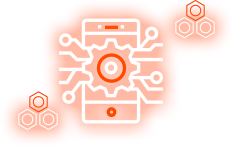

-
Incentivized Ecosystem Participation
TON is used as an incentive to various liquidity providers through its unique TON Incentivized Ecosystem Model in various staking, pool, voting systems, all composing the TON Ecosystem
-
Automatized Burning Algorithm
With fixed number of token being issued, Ton Ecosystem is built upon a unique Automatized Burning Algorithm that burns tokens used for voting, transaction fees, and various other service charges gradually reducing the overall token supply
-
Decentralized and Transparent Governance Operation
Key decisions within the TON Ecosystem are operated through TON-based Governance Voting System, guaranteeing democratized and transparent platform operation.
Decentralized Financial Ecosystem Based on Governance
Come build on the world's mostly used Decentralized Finance(De-Fi) ecosystem with TON
$17.67
TON Price
$17.67TON
Circulating Supply
$17.67%
Maximum APY in Farms
$17.67TON
Remaining
Welcome to DeFi Ecosystem
Disrupting the markets and barriers to join the Decentralized Financial ecosystems through comprehensive De-Fi services with TON
TON DECENTRALIZED ECOSYSTEM
Provides truly transparent, vibrant, and dynamic financial ecosystem
Secure Sovereignty Over Assets
TON ecosystem operates on a fully decentralized blockchain, providing users with maximum level of control over their assets and its operation.
No Central Operating Party
TON operates autonomously through various governance participants, such as traders and liquidity providers, rather than a specific central party.

Enhanced Transaction Protocol
TON ecosystem operates under Huobi Eco-Chain technology, increasing its transaction speed while drastically reducing its transaction costs.
TON Tokenomics
TON Ecosystem is composed of dual token structure with a blend of Governance Token (TON) and the Utility Token (TONT). TON is the main Governance Token required in the Governance Vote with a total issuance of 21 million tokens.
Meet the Alliance partners who are creating an active DeFi ecosystem with TON

Where we're going
Blockchain and Cryptocurrency we are facing today are just a mere glimpse of imagination of Future of Financial Ecosystem. Decentralized TON Ecosystem will be a stepping stone to such new era of Finance by providing transparent, democratic, and decentralized platform that enables everyone to freely contribute and share its talents and funds to this great movement towards innovation. TON envisions and marches towards this vision of a grand new world of Finance and Technology.
Ton